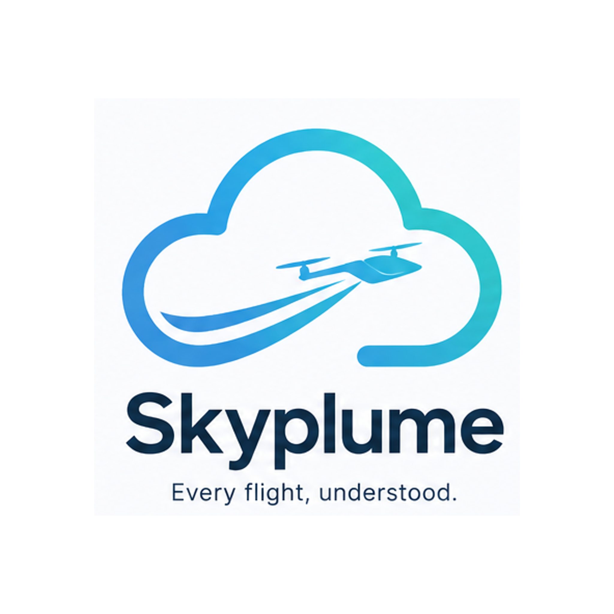
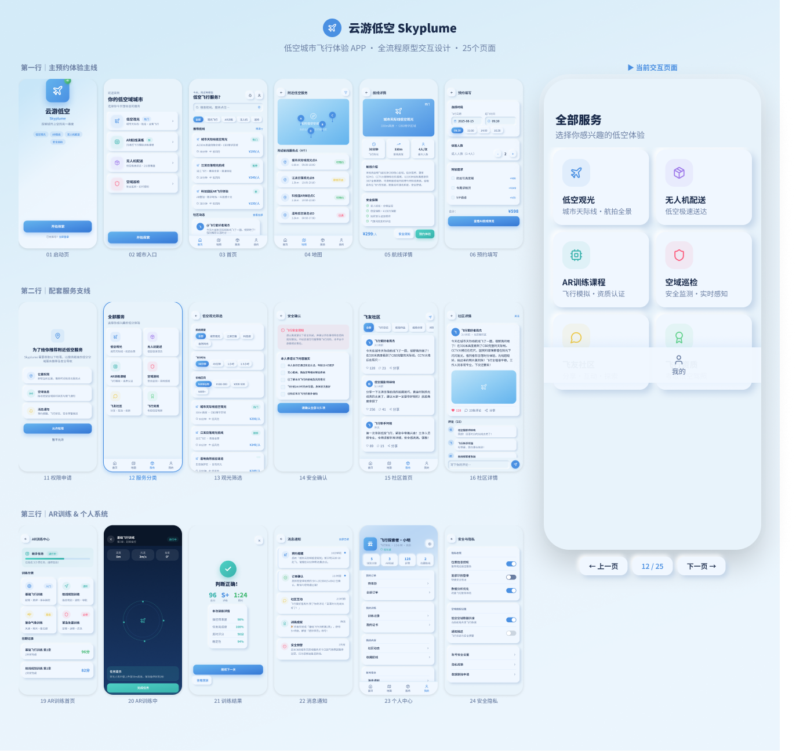
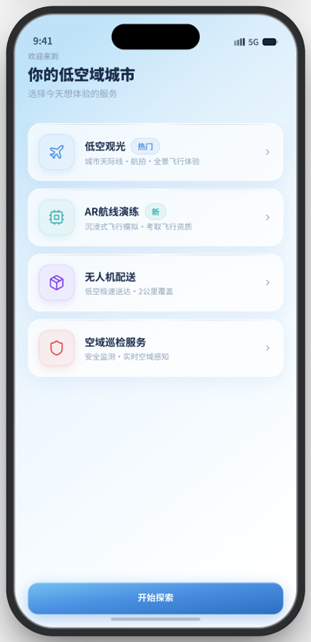
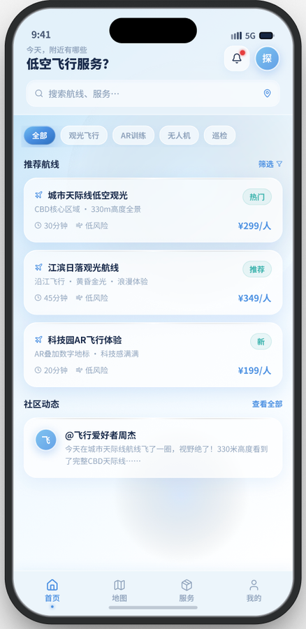
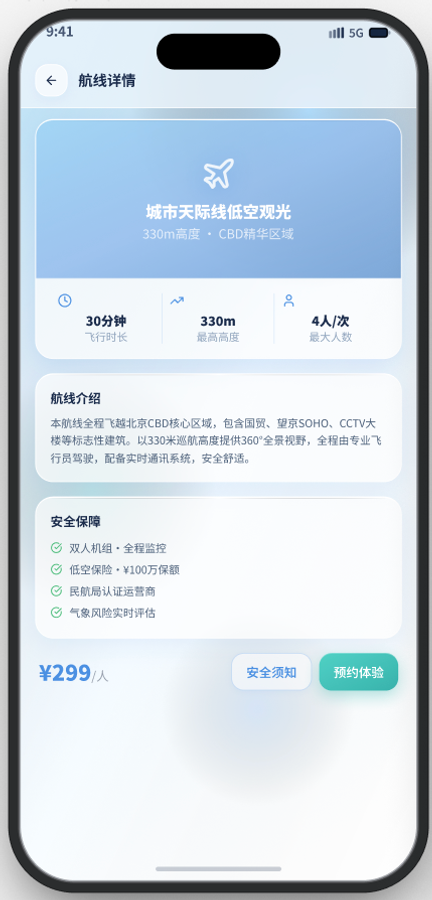
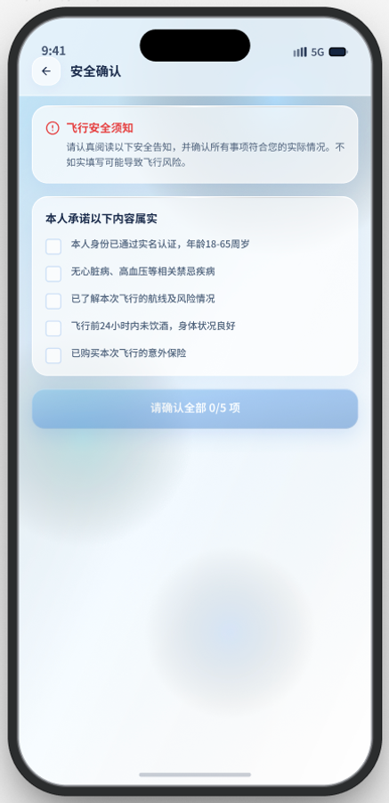

UX / Service Design · Shenzhen · 2026
云游低空
城市低空公共感知与协商系统
01 / Project thesis
项目命题
城市看得见飞行，
居民却看不懂它。
现有低空系统解决了“如何安全地飞”，却很少回答航线之下的人： 它为什么经过这里、会带来什么影响、出现问题由谁负责。
云游低空不是新的空管系统，而是连接居民、运营方与城市治理者的公共交互层。 它将专业运行数据翻译成生活可理解的信息，再让公众反馈回到航线与时段决策。
01变化低空活动进入城市
02冲突生活影响不可理解
03转译专业数据变成解释
04协商反馈进入治理闭环
02 / Context
为什么是深圳
低空基础设施已开始成网，
公众体验仍停留在盲区。
深圳同时具备政策密度、产业基础、城市密度与真实应用场景，是观察低空运行与地面生活关系的前置样本。
公开数据基线深圳低空经济 · 2024
来源：深圳市人民政府
研究判断
查看政府公开数据
基础设施和商业运行已经形成规模，公众侧需要同步获得可理解、可预测、可反馈的服务界面。
2026 起降点目标
形成社区、医院、商业区与交通枢纽的多层级网络。
2026 商业航线目标
物流、医疗、巡检、应急与未来载人场景持续增加。
2026 快送人口覆盖目标
效率提升越接近居民日常，解释与协商越不能缺席。
01
专业运行层
安全运行
通信 · 导航 · 监视 · 空域 · 流量
02
城市治理层
统筹监管
起降点 · 航线 · 运营商 · 风险事件
03
公众交互层
本项目切入
告知 · 解释 · 反馈 · 偏好 · 回溯
来源：深圳市交通运输局公开方案；深圳市政府公开政策文件；项目桌面研究整理。
03 / Research
用户研究
一次陌生飞行，
会制造五个连续断点。
政策与行业资料
情境观察
居民视角归纳
系统能力映射
01
听见 / 看见
陌生噪音或飞行器进入视野，却不知道它是什么。
来源不可见02
判断影响
无法判断持续时间、是否拍摄、是否接近敏感区域。
影响不可知03
寻找解释
公开信息分散在专业平台，语言与生活场景脱节。
规则不可懂04
尝试反馈
不知道向社区、运营商还是监管部门表达问题。
责任不可找05
等待结果
是否受理、如何核验、是否影响后续安排都不透明。
结果不可追核心洞察居民不一定反对低空飞行。
他们反对的是 无法预测、无法解释、无法回应的干扰。
居民视角
“我想知道它为什么来，以及什么时候离开。”
- 需要生活语言，而非航空参数
- 需要提前预期，而非事后公告
- 需要处理结果，而非提交成功
如何把专业低空运行数据，转译成普通居民能理解、能判断、能参与的信息？
来源：项目桌面研究、公开投诉场景与居民视角问题归纳。本阶段未虚构访谈样本，真实用户访谈与可用性测试列入后续验证计划。
04 / Opportunity
竞品与机会
能力都在“如何飞”，
缺口留在“如何被理解”。
六类产品覆盖城市治理、专业作业和消费服务，却很少同时处理公众解释、社区偏好与反馈回流。
能力维度SILAS星图 / 天信千寻DJI电信美团
态势 / 空域
航路 / 审批
任务 / 飞控
订单 / 履约
公众解释
反馈协商
未覆盖基础较强核心
借用态势与告警，重新组织公众语言。
SILAS 与星图证明了数字空域能力，但信息仍以管理者为中心。
借用任务追踪，建立责任与结果回溯。
DJI 擅长任务、飞控和异常处置，可转译为居民可追踪的事件状态。
借用履约表达，让一次飞行有始有终。
美团让订单进度清晰，却没有解释航线如何影响社区生活。
来源：SILAS、星图低空云、千寻位置、DJI FlightHub 2、中国电信、天信低空通及美团无人机公开资料。矩阵为设计分析评分，不代表官方评价。
05 / Strategy
产品策略
在专业系统之上，
补一层公共交互。
不替代审批权，不复制空管大屏。只把低空活动转译成事件、影响、原因、责任和反馈状态。
治理 / 运营输入
- 航线与任务计划
- 审批与运营主体
- 气象与禁飞信息
- 异常告警与处置
云游低空
公共感知
与协商层 解释 · 告知 · 协商 · 回溯
与协商层 解释 · 告知 · 协商 · 回溯
居民端输出
- 附近飞行通知
- 目的与影响解释
- 隐私与安全边界
- 反馈状态与结果
可感知
附近是否飞、来自哪里、持续多久。
可解释
任务目的、合规状态与影响边界。
可预测
提前告知时间、频率与变化原因。
可协商
反馈、偏好和社区条件进入决策。
06 / Experience
高保真交互系统
从选择低空服务，
到完成安全确认。
云游低空 Skyplume
低空城市飞行体验 APP · 全流程原型交互设计 · 25 个页面





01 / 服务入口
先按体验目的，而不是航空术语分流。
低空观光、AR 航线训练、无人机配送和空域巡检使用四色编码，帮助用户快速建立产品范围。
- 信息架构
- 四类核心服务并列呈现
- 视觉语言
- 蓝 · 绿 · 紫 · 红类别编码
02 / 首页发现
用航线卡片完成比较，用社区内容降低陌生感。
价格、时长、风险与体验标签在同一层级呈现，同时保留飞友社区作为真实体验的辅助证据。
- 核心决策
- 快速筛选适合的飞行体验
- 信息密度
- 三条航线 + 一条社区动态
03 / 航线详情
把“好不好玩”和“是否安全”放进同一个决策页面。
330m 高度、30 分钟、最多 4 人与安全保障共同呈现，避免体验价值和风险说明彼此割裂。
- 体验证据
- 时长 · 高度 · 人数 · 航线介绍
- 信任证据
- 监控 · 保险 · 运营商 · 气象
04 / 安全确认
高风险服务不靠一枚“同意”按钮草率带过。
身份、健康、风险认知、飞行前状态和意外保险被拆成五项逐条确认，形成明确的知情同意。
- 风险控制
- 五项前置确认缺一不可
- 状态反馈
- 按钮同步显示完成数量
选择服务筛选航线阅读详情填写预约安全确认
07 / Governance
治理端体验
把居民感知，纳入航线审批与运行复盘。
管理端不仅看飞行安全，也要看到地面影响、投诉压力与社区可接受条件。
真实运行基础 · 2025
治理设计建立在已发生的城市运行之上
深圳已实现飞行计划审批流程闭环；本项目进一步补足公众解释、影响反馈与运行复盘。
识别影响热区
将投诉位置、时间、噪音预测与航线叠加。
生成审批建议
平衡任务优先级、运行效率与社区条件。
发布公众解释
把专业判断生成面向居民的简洁说明。
回传处理结果
让一次反馈真正改变后续路线或时段。
08 / Validation
验证与下一步
从证据到策略，再到体验与验证，
每一步都形成可追溯的设计闭环。
每一项界面决策都能回到前期研究假设，并在测试指标中被验证；作品集不只展示结果，也完整呈现问题如何被定义、转译与收敛。
选出合适航线
用户能否依据时长、价格、风险与体验类型完成首次选择。
观察：完成时间 / 筛选路径理解服务与安全
用户能否读懂飞行高度、最大人数、安全保障与服务边界。
观察：信息遗漏 / 理解偏差完成预约确认
用户能否独立填写时段、人数与附加需求，并完成安全确认。
观察：路径错误 / 中途退出关键迭代方向
从展示“飞行数据”，转向解释“它与你的关系”。
早期表达高度 82m · 速度 11m/s
航线 MED-A-0248参数准确，但居民难以判断影响
航线 MED-A-0248参数准确，但居民难以判断影响
转译后4 分钟后经过小区东侧
低噪音 · 无拍摄任务优先回答时间、位置、原因和边界
低噪音 · 无拍摄任务优先回答时间、位置、原因和边界
公共信任来自
持续运行的闭环
持续运行的闭环
每一次服务发布、用户理解与真实反馈，都需要回到下一轮飞行配置，而不是停在一次告知。
优化结果重新进入下一轮飞行计划更清晰 · 更可预测 · 更可信
项目反思
真正困难的不是画地图，
而是决定哪些信息应该被看见。
公开透明与隐私保护之间，需要明确的数据边界和解释责任。
社区偏好不能直接等于禁飞规则，需要与任务公共价值共同评估。
后续需要接入真实航迹、噪音与反馈数据，验证系统是否改善信任。